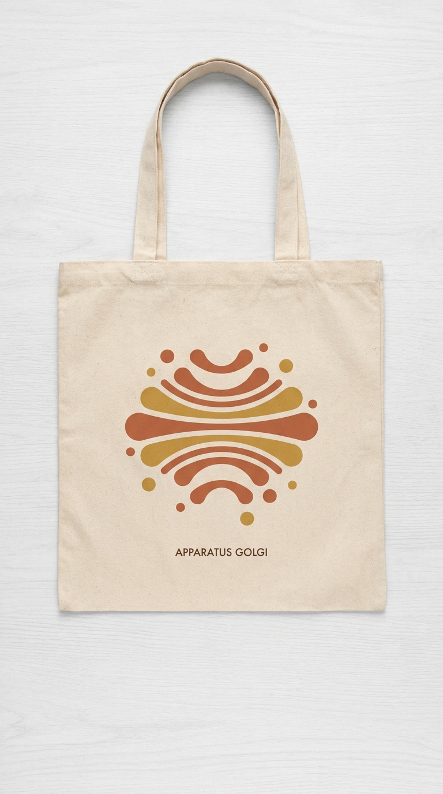
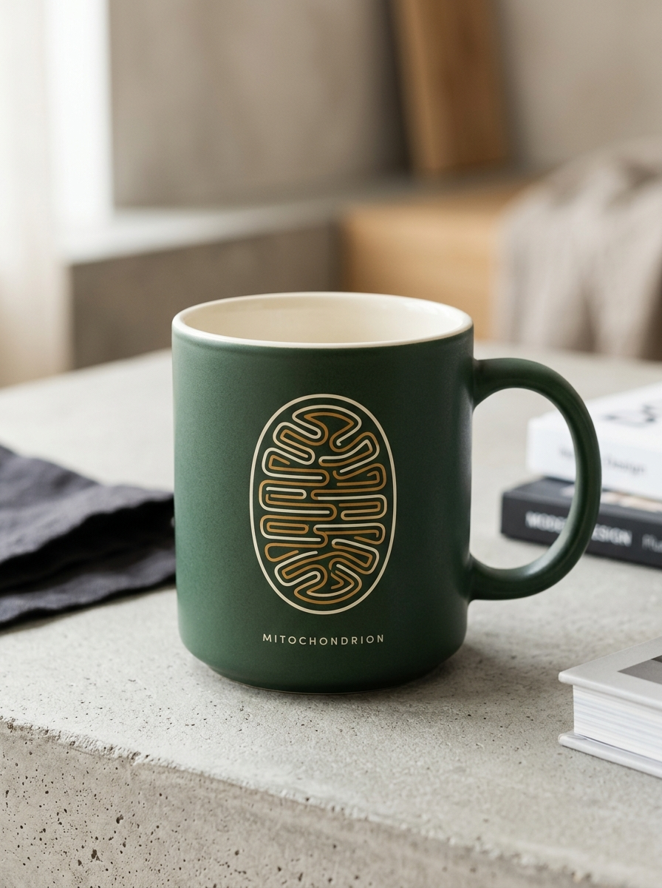
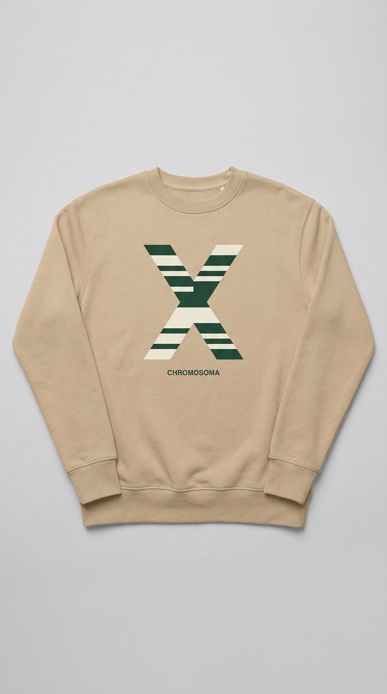
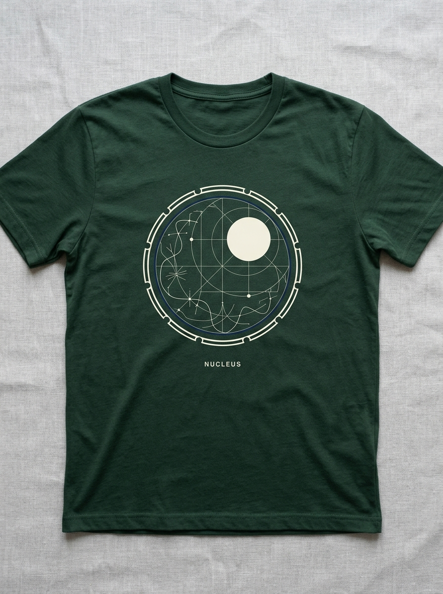

Как клетки — основы всего живого, так и хорошая одежда — основа живого стиля. Мы переосмыслили биологию через призму минимализма.
Биофак — это место познания жизни. Мы верим, что наука — это не только строгие факты, но и невероятная внутренняя красота. Microcosmos — это перенос микромира на повседневные вещи. Каждая вещь в коллекции вдохновлена главными компонентами клетки, превращая сложную геометрию органелл в стильный и лаконичный дизайн.

Сортировочный центр твоих идей и вещей. Цвета: горчичный и терракотовый.

Энергетическая станция твоего утра. Цвета: зеленый и горчичный.

Носитель твоего уникального стиля и кода. Цвета: зеленый и молочный.

Центр управления твоей повседневностью. Цвета: глубокий синий и зеленый.